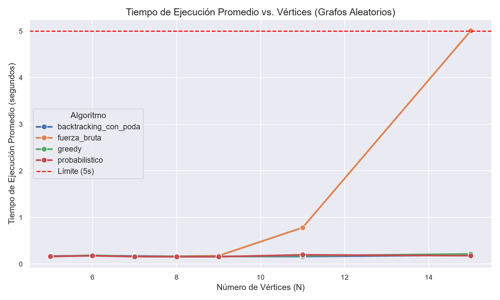
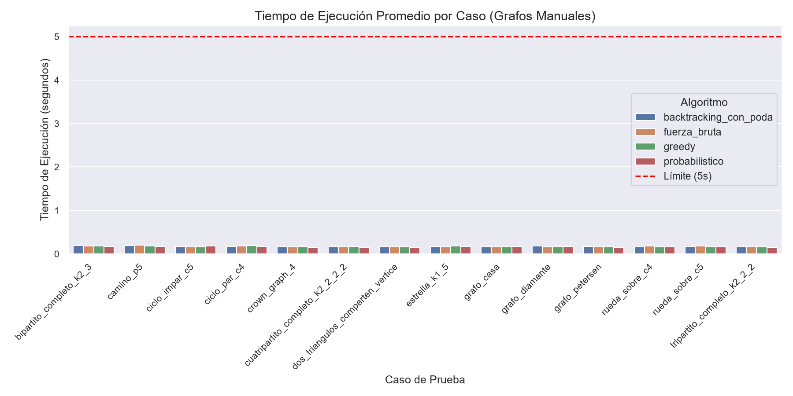
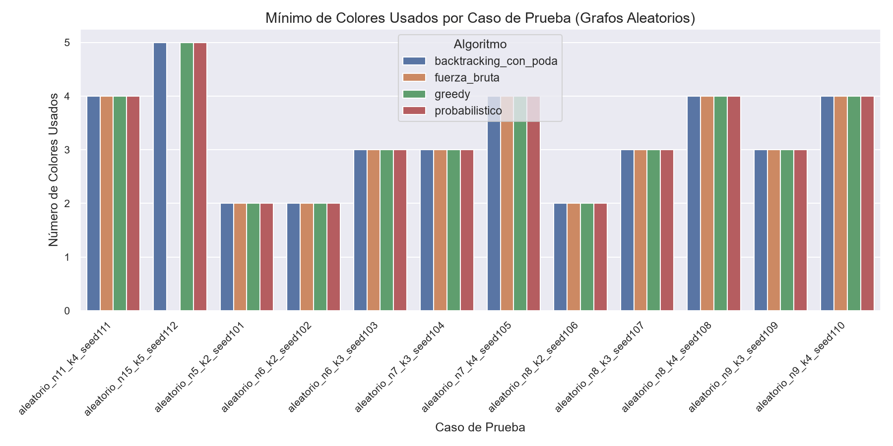
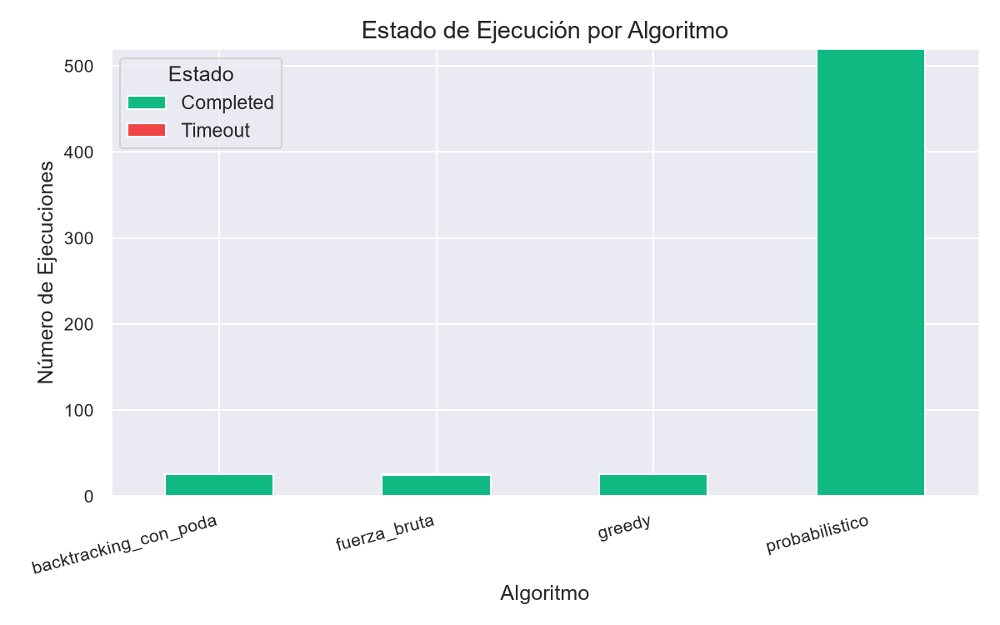

Análisis de rendimiento, colores utilizados y detección de tiempos límite (máx 5s)




| Algoritmo ↕ | Caso ↕ | Vértices ↕ | Aristas ↕ | Semilla ↕ | Repetición ↕ | Tiempo (s) ↕ | Colores Usados ↕ | Estado ↕ |
|---|---|---|---|---|---|---|---|---|
| backtracking_con_poda | aleatorio_n11_k4_seed111 | 11 | 23 | 111000 | 0 | 0.1602 s | 4 | Completed |
| fuerza_bruta | aleatorio_n11_k4_seed111 | 11 | 23 | 111000 | 0 | 0.7810 s | 4 | Completed |
| greedy | aleatorio_n11_k4_seed111 | 11 | 23 | 111000 | 0 | 0.1767 s | 4 | Completed |
| probabilistico | aleatorio_n11_k4_seed111 | 11 | 23 | 111000 | 0 | 0.1590 s | 5 | Completed |
| probabilistico | aleatorio_n11_k4_seed111 | 11 | 23 | 111001 | 1 | 0.2353 s | 5 | Completed |
| probabilistico | aleatorio_n11_k4_seed111 | 11 | 23 | 111002 | 2 | 0.4536 s | 4 | Completed |
| probabilistico | aleatorio_n11_k4_seed111 | 11 | 23 | 111003 | 3 | 0.3131 s | 6 | Completed |
| probabilistico | aleatorio_n11_k4_seed111 | 11 | 23 | 111004 | 4 | 0.2134 s | 5 | Completed |
| probabilistico | aleatorio_n11_k4_seed111 | 11 | 23 | 111005 | 5 | 0.1755 s | 5 | Completed |
| probabilistico | aleatorio_n11_k4_seed111 | 11 | 23 | 111006 | 6 | 0.1950 s | 4 | Completed |
| probabilistico | aleatorio_n11_k4_seed111 | 11 | 23 | 111007 | 7 | 0.1767 s | 5 | Completed |
| probabilistico | aleatorio_n11_k4_seed111 | 11 | 23 | 111008 | 8 | 0.1534 s | 4 | Completed |
| probabilistico | aleatorio_n11_k4_seed111 | 11 | 23 | 111009 | 9 | 0.1641 s | 4 | Completed |
| probabilistico | aleatorio_n11_k4_seed111 | 11 | 23 | 111010 | 10 | 0.2360 s | 5 | Completed |
| probabilistico | aleatorio_n11_k4_seed111 | 11 | 23 | 111011 | 11 | 0.1801 s | 4 | Completed |
| probabilistico | aleatorio_n11_k4_seed111 | 11 | 23 | 111012 | 12 | 0.1671 s | 5 | Completed |
| probabilistico | aleatorio_n11_k4_seed111 | 11 | 23 | 111013 | 13 | 0.1715 s | 5 | Completed |
| probabilistico | aleatorio_n11_k4_seed111 | 11 | 23 | 111014 | 14 | 0.1572 s | 4 | Completed |
| probabilistico | aleatorio_n11_k4_seed111 | 11 | 23 | 111015 | 15 | 0.1559 s | 4 | Completed |
| probabilistico | aleatorio_n11_k4_seed111 | 11 | 23 | 111016 | 16 | 0.1510 s | 5 | Completed |
| probabilistico | aleatorio_n11_k4_seed111 | 11 | 23 | 111017 | 17 | 0.1529 s | 4 | Completed |
| probabilistico | aleatorio_n11_k4_seed111 | 11 | 23 | 111018 | 18 | 0.1515 s | 4 | Completed |
| probabilistico | aleatorio_n11_k4_seed111 | 11 | 23 | 111019 | 19 | 0.1678 s | 5 | Completed |
| backtracking_con_poda | aleatorio_n15_k5_seed112 | 15 | 49 | 112000 | 0 | 0.1904 s | 5 | Completed |
| fuerza_bruta | aleatorio_n15_k5_seed112 | 15 | 49 | 112000 | 0 | 5.0065 s | - | Timeout |
| greedy | aleatorio_n15_k5_seed112 | 15 | 49 | 112000 | 0 | 0.2145 s | 5 | Completed |
| probabilistico | aleatorio_n15_k5_seed112 | 15 | 49 | 112000 | 0 | 0.2931 s | 6 | Completed |
| probabilistico | aleatorio_n15_k5_seed112 | 15 | 49 | 112001 | 1 | 0.1519 s | 6 | Completed |
| probabilistico | aleatorio_n15_k5_seed112 | 15 | 49 | 112002 | 2 | 0.1560 s | 6 | Completed |
| probabilistico | aleatorio_n15_k5_seed112 | 15 | 49 | 112003 | 3 | 0.1774 s | 6 | Completed |
| probabilistico | aleatorio_n15_k5_seed112 | 15 | 49 | 112004 | 4 | 0.1709 s | 5 | Completed |
| probabilistico | aleatorio_n15_k5_seed112 | 15 | 49 | 112005 | 5 | 0.1698 s | 6 | Completed |
| probabilistico | aleatorio_n15_k5_seed112 | 15 | 49 | 112006 | 6 | 0.1698 s | 7 | Completed |
| probabilistico | aleatorio_n15_k5_seed112 | 15 | 49 | 112007 | 7 | 0.1991 s | 6 | Completed |
| probabilistico | aleatorio_n15_k5_seed112 | 15 | 49 | 112008 | 8 | 0.1647 s | 6 | Completed |
| probabilistico | aleatorio_n15_k5_seed112 | 15 | 49 | 112009 | 9 | 0.1556 s | 6 | Completed |
| probabilistico | aleatorio_n15_k5_seed112 | 15 | 49 | 112010 | 10 | 0.1744 s | 6 | Completed |
| probabilistico | aleatorio_n15_k5_seed112 | 15 | 49 | 112011 | 11 | 0.1723 s | 6 | Completed |
| probabilistico | aleatorio_n15_k5_seed112 | 15 | 49 | 112012 | 12 | 0.1607 s | 5 | Completed |
| probabilistico | aleatorio_n15_k5_seed112 | 15 | 49 | 112013 | 13 | 0.1722 s | 6 | Completed |
| probabilistico | aleatorio_n15_k5_seed112 | 15 | 49 | 112014 | 14 | 0.1712 s | 6 | Completed |
| probabilistico | aleatorio_n15_k5_seed112 | 15 | 49 | 112015 | 15 | 0.1690 s | 6 | Completed |
| probabilistico | aleatorio_n15_k5_seed112 | 15 | 49 | 112016 | 16 | 0.1648 s | 5 | Completed |
| probabilistico | aleatorio_n15_k5_seed112 | 15 | 49 | 112017 | 17 | 0.1594 s | 6 | Completed |
| probabilistico | aleatorio_n15_k5_seed112 | 15 | 49 | 112018 | 18 | 0.1716 s | 5 | Completed |
| probabilistico | aleatorio_n15_k5_seed112 | 15 | 49 | 112019 | 19 | 0.2320 s | 5 | Completed |
| backtracking_con_poda | aleatorio_n5_k2_seed101 | 5 | 4 | 101000 | 0 | 0.1697 s | 2 | Completed |
| fuerza_bruta | aleatorio_n5_k2_seed101 | 5 | 4 | 101000 | 0 | 0.1600 s | 2 | Completed |
| greedy | aleatorio_n5_k2_seed101 | 5 | 4 | 101000 | 0 | 0.1591 s | 2 | Completed |
| probabilistico | aleatorio_n5_k2_seed101 | 5 | 4 | 101000 | 0 | 0.1740 s | 3 | Completed |
| probabilistico | aleatorio_n5_k2_seed101 | 5 | 4 | 101001 | 1 | 0.1618 s | 2 | Completed |
| probabilistico | aleatorio_n5_k2_seed101 | 5 | 4 | 101002 | 2 | 0.1541 s | 3 | Completed |
| probabilistico | aleatorio_n5_k2_seed101 | 5 | 4 | 101003 | 3 | 0.1606 s | 2 | Completed |
| probabilistico | aleatorio_n5_k2_seed101 | 5 | 4 | 101004 | 4 | 0.1622 s | 2 | Completed |
| probabilistico | aleatorio_n5_k2_seed101 | 5 | 4 | 101005 | 5 | 0.1641 s | 3 | Completed |
| probabilistico | aleatorio_n5_k2_seed101 | 5 | 4 | 101006 | 6 | 0.1622 s | 2 | Completed |
| probabilistico | aleatorio_n5_k2_seed101 | 5 | 4 | 101007 | 7 | 0.1736 s | 3 | Completed |
| probabilistico | aleatorio_n5_k2_seed101 | 5 | 4 | 101008 | 8 | 0.1667 s | 3 | Completed |
| probabilistico | aleatorio_n5_k2_seed101 | 5 | 4 | 101009 | 9 | 0.1577 s | 3 | Completed |
| probabilistico | aleatorio_n5_k2_seed101 | 5 | 4 | 101010 | 10 | 0.1560 s | 3 | Completed |
| probabilistico | aleatorio_n5_k2_seed101 | 5 | 4 | 101011 | 11 | 0.1565 s | 2 | Completed |
| probabilistico | aleatorio_n5_k2_seed101 | 5 | 4 | 101012 | 12 | 0.1653 s | 2 | Completed |
| probabilistico | aleatorio_n5_k2_seed101 | 5 | 4 | 101013 | 13 | 0.1655 s | 2 | Completed |
| probabilistico | aleatorio_n5_k2_seed101 | 5 | 4 | 101014 | 14 | 0.1780 s | 3 | Completed |
| probabilistico | aleatorio_n5_k2_seed101 | 5 | 4 | 101015 | 15 | 0.1615 s | 2 | Completed |
| probabilistico | aleatorio_n5_k2_seed101 | 5 | 4 | 101016 | 16 | 0.1668 s | 2 | Completed |
| probabilistico | aleatorio_n5_k2_seed101 | 5 | 4 | 101017 | 17 | 0.1735 s | 3 | Completed |
| probabilistico | aleatorio_n5_k2_seed101 | 5 | 4 | 101018 | 18 | 0.1640 s | 2 | Completed |
| probabilistico | aleatorio_n5_k2_seed101 | 5 | 4 | 101019 | 19 | 0.1517 s | 2 | Completed |
| backtracking_con_poda | aleatorio_n6_k2_seed102 | 6 | 6 | 102000 | 0 | 0.1634 s | 2 | Completed |
| fuerza_bruta | aleatorio_n6_k2_seed102 | 6 | 6 | 102000 | 0 | 0.1817 s | 2 | Completed |
| greedy | aleatorio_n6_k2_seed102 | 6 | 6 | 102000 | 0 | 0.1626 s | 2 | Completed |
| probabilistico | aleatorio_n6_k2_seed102 | 6 | 6 | 102000 | 0 | 0.1604 s | 2 | Completed |
| probabilistico | aleatorio_n6_k2_seed102 | 6 | 6 | 102001 | 1 | 0.1726 s | 3 | Completed |
| probabilistico | aleatorio_n6_k2_seed102 | 6 | 6 | 102002 | 2 | 0.1724 s | 2 | Completed |
| probabilistico | aleatorio_n6_k2_seed102 | 6 | 6 | 102003 | 3 | 0.2075 s | 3 | Completed |
| probabilistico | aleatorio_n6_k2_seed102 | 6 | 6 | 102004 | 4 | 0.2109 s | 2 | Completed |
| probabilistico | aleatorio_n6_k2_seed102 | 6 | 6 | 102005 | 5 | 0.2139 s | 3 | Completed |
| probabilistico | aleatorio_n6_k2_seed102 | 6 | 6 | 102006 | 6 | 0.2149 s | 2 | Completed |
| probabilistico | aleatorio_n6_k2_seed102 | 6 | 6 | 102007 | 7 | 0.1972 s | 2 | Completed |
| probabilistico | aleatorio_n6_k2_seed102 | 6 | 6 | 102008 | 8 | 0.2010 s | 3 | Completed |
| probabilistico | aleatorio_n6_k2_seed102 | 6 | 6 | 102009 | 9 | 0.2055 s | 2 | Completed |
| probabilistico | aleatorio_n6_k2_seed102 | 6 | 6 | 102010 | 10 | 0.2123 s | 3 | Completed |
| probabilistico | aleatorio_n6_k2_seed102 | 6 | 6 | 102011 | 11 | 0.1787 s | 3 | Completed |
| probabilistico | aleatorio_n6_k2_seed102 | 6 | 6 | 102012 | 12 | 0.1803 s | 2 | Completed |
| probabilistico | aleatorio_n6_k2_seed102 | 6 | 6 | 102013 | 13 | 0.1747 s | 2 | Completed |
| probabilistico | aleatorio_n6_k2_seed102 | 6 | 6 | 102014 | 14 | 0.1804 s | 2 | Completed |
| probabilistico | aleatorio_n6_k2_seed102 | 6 | 6 | 102015 | 15 | 0.1781 s | 2 | Completed |
| probabilistico | aleatorio_n6_k2_seed102 | 6 | 6 | 102016 | 16 | 0.1922 s | 3 | Completed |
| probabilistico | aleatorio_n6_k2_seed102 | 6 | 6 | 102017 | 17 | 0.1793 s | 2 | Completed |
| probabilistico | aleatorio_n6_k2_seed102 | 6 | 6 | 102018 | 18 | 0.1805 s | 3 | Completed |
| probabilistico | aleatorio_n6_k2_seed102 | 6 | 6 | 102019 | 19 | 0.1793 s | 2 | Completed |
| backtracking_con_poda | aleatorio_n6_k3_seed103 | 6 | 10 | 103000 | 0 | 0.1951 s | 3 | Completed |
| fuerza_bruta | aleatorio_n6_k3_seed103 | 6 | 10 | 103000 | 0 | 0.1830 s | 3 | Completed |
| greedy | aleatorio_n6_k3_seed103 | 6 | 10 | 103000 | 0 | 0.2107 s | 3 | Completed |
| probabilistico | aleatorio_n6_k3_seed103 | 6 | 10 | 103000 | 0 | 0.1886 s | 4 | Completed |
| probabilistico | aleatorio_n6_k3_seed103 | 6 | 10 | 103001 | 1 | 0.1811 s | 3 | Completed |
| probabilistico | aleatorio_n6_k3_seed103 | 6 | 10 | 103002 | 2 | 0.1749 s | 3 | Completed |
| probabilistico | aleatorio_n6_k3_seed103 | 6 | 10 | 103003 | 3 | 0.1628 s | 4 | Completed |
| probabilistico | aleatorio_n6_k3_seed103 | 6 | 10 | 103004 | 4 | 0.1542 s | 3 | Completed |
| probabilistico | aleatorio_n6_k3_seed103 | 6 | 10 | 103005 | 5 | 0.1624 s | 3 | Completed |
| probabilistico | aleatorio_n6_k3_seed103 | 6 | 10 | 103006 | 6 | 0.1620 s | 4 | Completed |
| probabilistico | aleatorio_n6_k3_seed103 | 6 | 10 | 103007 | 7 | 0.1565 s | 3 | Completed |
| probabilistico | aleatorio_n6_k3_seed103 | 6 | 10 | 103008 | 8 | 0.1643 s | 3 | Completed |
| probabilistico | aleatorio_n6_k3_seed103 | 6 | 10 | 103009 | 9 | 0.1525 s | 3 | Completed |
| probabilistico | aleatorio_n6_k3_seed103 | 6 | 10 | 103010 | 10 | 0.1529 s | 3 | Completed |
| probabilistico | aleatorio_n6_k3_seed103 | 6 | 10 | 103011 | 11 | 0.1546 s | 4 | Completed |
| probabilistico | aleatorio_n6_k3_seed103 | 6 | 10 | 103012 | 12 | 0.1640 s | 3 | Completed |
| probabilistico | aleatorio_n6_k3_seed103 | 6 | 10 | 103013 | 13 | 0.1618 s | 4 | Completed |
| probabilistico | aleatorio_n6_k3_seed103 | 6 | 10 | 103014 | 14 | 0.1538 s | 3 | Completed |
| probabilistico | aleatorio_n6_k3_seed103 | 6 | 10 | 103015 | 15 | 0.1531 s | 3 | Completed |
| probabilistico | aleatorio_n6_k3_seed103 | 6 | 10 | 103016 | 16 | 0.1535 s | 4 | Completed |
| probabilistico | aleatorio_n6_k3_seed103 | 6 | 10 | 103017 | 17 | 0.1530 s | 3 | Completed |
| probabilistico | aleatorio_n6_k3_seed103 | 6 | 10 | 103018 | 18 | 0.1541 s | 3 | Completed |
| probabilistico | aleatorio_n6_k3_seed103 | 6 | 10 | 103019 | 19 | 0.1791 s | 3 | Completed |
| backtracking_con_poda | aleatorio_n7_k3_seed104 | 7 | 11 | 104000 | 0 | 0.1746 s | 3 | Completed |
| fuerza_bruta | aleatorio_n7_k3_seed104 | 7 | 11 | 104000 | 0 | 0.1605 s | 3 | Completed |
| greedy | aleatorio_n7_k3_seed104 | 7 | 11 | 104000 | 0 | 0.1604 s | 3 | Completed |
| probabilistico | aleatorio_n7_k3_seed104 | 7 | 11 | 104000 | 0 | 0.1601 s | 4 | Completed |
| probabilistico | aleatorio_n7_k3_seed104 | 7 | 11 | 104001 | 1 | 0.1520 s | 4 | Completed |
| probabilistico | aleatorio_n7_k3_seed104 | 7 | 11 | 104002 | 2 | 0.1574 s | 4 | Completed |
| probabilistico | aleatorio_n7_k3_seed104 | 7 | 11 | 104003 | 3 | 0.1603 s | 3 | Completed |
| probabilistico | aleatorio_n7_k3_seed104 | 7 | 11 | 104004 | 4 | 0.2107 s | 3 | Completed |
| probabilistico | aleatorio_n7_k3_seed104 | 7 | 11 | 104005 | 5 | 0.1631 s | 3 | Completed |
| probabilistico | aleatorio_n7_k3_seed104 | 7 | 11 | 104006 | 6 | 0.1596 s | 4 | Completed |
| probabilistico | aleatorio_n7_k3_seed104 | 7 | 11 | 104007 | 7 | 0.1537 s | 4 | Completed |
| probabilistico | aleatorio_n7_k3_seed104 | 7 | 11 | 104008 | 8 | 0.1534 s | 3 | Completed |
| probabilistico | aleatorio_n7_k3_seed104 | 7 | 11 | 104009 | 9 | 0.1557 s | 4 | Completed |
| probabilistico | aleatorio_n7_k3_seed104 | 7 | 11 | 104010 | 10 | 0.1678 s | 4 | Completed |
| probabilistico | aleatorio_n7_k3_seed104 | 7 | 11 | 104011 | 11 | 0.1573 s | 4 | Completed |
| probabilistico | aleatorio_n7_k3_seed104 | 7 | 11 | 104012 | 12 | 0.1520 s | 4 | Completed |
| probabilistico | aleatorio_n7_k3_seed104 | 7 | 11 | 104013 | 13 | 0.1529 s | 3 | Completed |
| probabilistico | aleatorio_n7_k3_seed104 | 7 | 11 | 104014 | 14 | 0.1535 s | 4 | Completed |
| probabilistico | aleatorio_n7_k3_seed104 | 7 | 11 | 104015 | 15 | 0.1540 s | 4 | Completed |
| probabilistico | aleatorio_n7_k3_seed104 | 7 | 11 | 104016 | 16 | 0.1554 s | 4 | Completed |
| probabilistico | aleatorio_n7_k3_seed104 | 7 | 11 | 104017 | 17 | 0.1557 s | 3 | Completed |
| probabilistico | aleatorio_n7_k3_seed104 | 7 | 11 | 104018 | 18 | 0.1634 s | 4 | Completed |
| probabilistico | aleatorio_n7_k3_seed104 | 7 | 11 | 104019 | 19 | 0.1524 s | 4 | Completed |
| backtracking_con_poda | aleatorio_n7_k4_seed105 | 7 | 9 | 105000 | 0 | 0.1690 s | 4 | Completed |
| fuerza_bruta | aleatorio_n7_k4_seed105 | 7 | 9 | 105000 | 0 | 0.1614 s | 4 | Completed |
| greedy | aleatorio_n7_k4_seed105 | 7 | 9 | 105000 | 0 | 0.1594 s | 4 | Completed |
| probabilistico | aleatorio_n7_k4_seed105 | 7 | 9 | 105000 | 0 | 0.1620 s | 4 | Completed |
| probabilistico | aleatorio_n7_k4_seed105 | 7 | 9 | 105001 | 1 | 0.1596 s | 4 | Completed |
| probabilistico | aleatorio_n7_k4_seed105 | 7 | 9 | 105002 | 2 | 0.1633 s | 4 | Completed |
| probabilistico | aleatorio_n7_k4_seed105 | 7 | 9 | 105003 | 3 | 0.1515 s | 4 | Completed |
| probabilistico | aleatorio_n7_k4_seed105 | 7 | 9 | 105004 | 4 | 0.1513 s | 4 | Completed |
| probabilistico | aleatorio_n7_k4_seed105 | 7 | 9 | 105005 | 5 | 0.1557 s | 4 | Completed |
| probabilistico | aleatorio_n7_k4_seed105 | 7 | 9 | 105006 | 6 | 0.1524 s | 4 | Completed |
| probabilistico | aleatorio_n7_k4_seed105 | 7 | 9 | 105007 | 7 | 0.1544 s | 4 | Completed |
| probabilistico | aleatorio_n7_k4_seed105 | 7 | 9 | 105008 | 8 | 0.1514 s | 4 | Completed |
| probabilistico | aleatorio_n7_k4_seed105 | 7 | 9 | 105009 | 9 | 0.1712 s | 4 | Completed |
| probabilistico | aleatorio_n7_k4_seed105 | 7 | 9 | 105010 | 10 | 0.1510 s | 4 | Completed |
| probabilistico | aleatorio_n7_k4_seed105 | 7 | 9 | 105011 | 11 | 0.1572 s | 4 | Completed |
| probabilistico | aleatorio_n7_k4_seed105 | 7 | 9 | 105012 | 12 | 0.1523 s | 4 | Completed |
| probabilistico | aleatorio_n7_k4_seed105 | 7 | 9 | 105013 | 13 | 0.1532 s | 4 | Completed |
| probabilistico | aleatorio_n7_k4_seed105 | 7 | 9 | 105014 | 14 | 0.1529 s | 4 | Completed |
| probabilistico | aleatorio_n7_k4_seed105 | 7 | 9 | 105015 | 15 | 0.1533 s | 4 | Completed |
| probabilistico | aleatorio_n7_k4_seed105 | 7 | 9 | 105016 | 16 | 0.1810 s | 4 | Completed |
| probabilistico | aleatorio_n7_k4_seed105 | 7 | 9 | 105017 | 17 | 0.1674 s | 4 | Completed |
| probabilistico | aleatorio_n7_k4_seed105 | 7 | 9 | 105018 | 18 | 0.1538 s | 4 | Completed |
| probabilistico | aleatorio_n7_k4_seed105 | 7 | 9 | 105019 | 19 | 0.1513 s | 4 | Completed |
| backtracking_con_poda | aleatorio_n8_k2_seed106 | 8 | 15 | 106000 | 0 | 0.1593 s | 2 | Completed |
| fuerza_bruta | aleatorio_n8_k2_seed106 | 8 | 15 | 106000 | 0 | 0.1597 s | 2 | Completed |
| greedy | aleatorio_n8_k2_seed106 | 8 | 15 | 106000 | 0 | 0.1615 s | 2 | Completed |
| probabilistico | aleatorio_n8_k2_seed106 | 8 | 15 | 106000 | 0 | 0.1792 s | 2 | Completed |
| probabilistico | aleatorio_n8_k2_seed106 | 8 | 15 | 106001 | 1 | 0.1554 s | 2 | Completed |
| probabilistico | aleatorio_n8_k2_seed106 | 8 | 15 | 106002 | 2 | 0.1572 s | 2 | Completed |
| probabilistico | aleatorio_n8_k2_seed106 | 8 | 15 | 106003 | 3 | 0.1532 s | 2 | Completed |
| probabilistico | aleatorio_n8_k2_seed106 | 8 | 15 | 106004 | 4 | 0.1494 s | 2 | Completed |
| probabilistico | aleatorio_n8_k2_seed106 | 8 | 15 | 106005 | 5 | 0.1541 s | 2 | Completed |
| probabilistico | aleatorio_n8_k2_seed106 | 8 | 15 | 106006 | 6 | 0.1524 s | 2 | Completed |
| probabilistico | aleatorio_n8_k2_seed106 | 8 | 15 | 106007 | 7 | 0.1678 s | 2 | Completed |
| probabilistico | aleatorio_n8_k2_seed106 | 8 | 15 | 106008 | 8 | 0.1512 s | 2 | Completed |
| probabilistico | aleatorio_n8_k2_seed106 | 8 | 15 | 106009 | 9 | 0.1515 s | 2 | Completed |
| probabilistico | aleatorio_n8_k2_seed106 | 8 | 15 | 106010 | 10 | 0.1539 s | 2 | Completed |
| probabilistico | aleatorio_n8_k2_seed106 | 8 | 15 | 106011 | 11 | 0.1540 s | 2 | Completed |
| probabilistico | aleatorio_n8_k2_seed106 | 8 | 15 | 106012 | 12 | 0.1546 s | 2 | Completed |
| probabilistico | aleatorio_n8_k2_seed106 | 8 | 15 | 106013 | 13 | 0.1515 s | 2 | Completed |
| probabilistico | aleatorio_n8_k2_seed106 | 8 | 15 | 106014 | 14 | 0.1590 s | 2 | Completed |
| probabilistico | aleatorio_n8_k2_seed106 | 8 | 15 | 106015 | 15 | 0.1594 s | 2 | Completed |
| probabilistico | aleatorio_n8_k2_seed106 | 8 | 15 | 106016 | 16 | 0.1527 s | 2 | Completed |
| probabilistico | aleatorio_n8_k2_seed106 | 8 | 15 | 106017 | 17 | 0.1524 s | 3 | Completed |
| probabilistico | aleatorio_n8_k2_seed106 | 8 | 15 | 106018 | 18 | 0.1524 s | 2 | Completed |
| probabilistico | aleatorio_n8_k2_seed106 | 8 | 15 | 106019 | 19 | 0.1506 s | 2 | Completed |
| backtracking_con_poda | aleatorio_n8_k3_seed107 | 8 | 15 | 107000 | 0 | 0.1594 s | 3 | Completed |
| fuerza_bruta | aleatorio_n8_k3_seed107 | 8 | 15 | 107000 | 0 | 0.1664 s | 3 | Completed |
| greedy | aleatorio_n8_k3_seed107 | 8 | 15 | 107000 | 0 | 0.1698 s | 3 | Completed |
| probabilistico | aleatorio_n8_k3_seed107 | 8 | 15 | 107000 | 0 | 0.1607 s | 3 | Completed |
| probabilistico | aleatorio_n8_k3_seed107 | 8 | 15 | 107001 | 1 | 0.1536 s | 3 | Completed |
| probabilistico | aleatorio_n8_k3_seed107 | 8 | 15 | 107002 | 2 | 0.1528 s | 3 | Completed |
| probabilistico | aleatorio_n8_k3_seed107 | 8 | 15 | 107003 | 3 | 0.1514 s | 3 | Completed |
| probabilistico | aleatorio_n8_k3_seed107 | 8 | 15 | 107004 | 4 | 0.1538 s | 3 | Completed |
| probabilistico | aleatorio_n8_k3_seed107 | 8 | 15 | 107005 | 5 | 0.1536 s | 3 | Completed |
| probabilistico | aleatorio_n8_k3_seed107 | 8 | 15 | 107006 | 6 | 0.1660 s | 3 | Completed |
| probabilistico | aleatorio_n8_k3_seed107 | 8 | 15 | 107007 | 7 | 0.1526 s | 3 | Completed |
| probabilistico | aleatorio_n8_k3_seed107 | 8 | 15 | 107008 | 8 | 0.1529 s | 3 | Completed |
| probabilistico | aleatorio_n8_k3_seed107 | 8 | 15 | 107009 | 9 | 0.1513 s | 4 | Completed |
| probabilistico | aleatorio_n8_k3_seed107 | 8 | 15 | 107010 | 10 | 0.1493 s | 3 | Completed |
| probabilistico | aleatorio_n8_k3_seed107 | 8 | 15 | 107011 | 11 | 0.1487 s | 4 | Completed |
| probabilistico | aleatorio_n8_k3_seed107 | 8 | 15 | 107012 | 12 | 0.1514 s | 3 | Completed |
| probabilistico | aleatorio_n8_k3_seed107 | 8 | 15 | 107013 | 13 | 0.1718 s | 3 | Completed |
| probabilistico | aleatorio_n8_k3_seed107 | 8 | 15 | 107014 | 14 | 0.1541 s | 3 | Completed |
| probabilistico | aleatorio_n8_k3_seed107 | 8 | 15 | 107015 | 15 | 0.1551 s | 3 | Completed |
| probabilistico | aleatorio_n8_k3_seed107 | 8 | 15 | 107016 | 16 | 0.1506 s | 3 | Completed |
| probabilistico | aleatorio_n8_k3_seed107 | 8 | 15 | 107017 | 17 | 0.1510 s | 3 | Completed |
| probabilistico | aleatorio_n8_k3_seed107 | 8 | 15 | 107018 | 18 | 0.1515 s | 3 | Completed |
| probabilistico | aleatorio_n8_k3_seed107 | 8 | 15 | 107019 | 19 | 0.1549 s | 4 | Completed |
| backtracking_con_poda | aleatorio_n8_k4_seed108 | 8 | 15 | 108000 | 0 | 0.1782 s | 4 | Completed |
| fuerza_bruta | aleatorio_n8_k4_seed108 | 8 | 15 | 108000 | 0 | 0.1711 s | 4 | Completed |
| greedy | aleatorio_n8_k4_seed108 | 8 | 15 | 108000 | 0 | 0.1579 s | 4 | Completed |
| probabilistico | aleatorio_n8_k4_seed108 | 8 | 15 | 108000 | 0 | 0.1646 s | 4 | Completed |
| probabilistico | aleatorio_n8_k4_seed108 | 8 | 15 | 108001 | 1 | 0.1672 s | 4 | Completed |
| probabilistico | aleatorio_n8_k4_seed108 | 8 | 15 | 108002 | 2 | 0.1548 s | 4 | Completed |
| probabilistico | aleatorio_n8_k4_seed108 | 8 | 15 | 108003 | 3 | 0.1512 s | 4 | Completed |
| probabilistico | aleatorio_n8_k4_seed108 | 8 | 15 | 108004 | 4 | 0.1672 s | 4 | Completed |
| probabilistico | aleatorio_n8_k4_seed108 | 8 | 15 | 108005 | 5 | 0.1530 s | 4 | Completed |
| probabilistico | aleatorio_n8_k4_seed108 | 8 | 15 | 108006 | 6 | 0.1530 s | 5 | Completed |
| probabilistico | aleatorio_n8_k4_seed108 | 8 | 15 | 108007 | 7 | 0.1513 s | 4 | Completed |
| probabilistico | aleatorio_n8_k4_seed108 | 8 | 15 | 108008 | 8 | 0.1559 s | 4 | Completed |
| probabilistico | aleatorio_n8_k4_seed108 | 8 | 15 | 108009 | 9 | 0.1520 s | 4 | Completed |
| probabilistico | aleatorio_n8_k4_seed108 | 8 | 15 | 108010 | 10 | 0.1539 s | 4 | Completed |
| probabilistico | aleatorio_n8_k4_seed108 | 8 | 15 | 108011 | 11 | 0.1583 s | 4 | Completed |
| probabilistico | aleatorio_n8_k4_seed108 | 8 | 15 | 108012 | 12 | 0.1605 s | 4 | Completed |
| probabilistico | aleatorio_n8_k4_seed108 | 8 | 15 | 108013 | 13 | 0.1526 s | 4 | Completed |
| probabilistico | aleatorio_n8_k4_seed108 | 8 | 15 | 108014 | 14 | 0.1537 s | 4 | Completed |
| probabilistico | aleatorio_n8_k4_seed108 | 8 | 15 | 108015 | 15 | 0.1512 s | 4 | Completed |
| probabilistico | aleatorio_n8_k4_seed108 | 8 | 15 | 108016 | 16 | 0.1532 s | 4 | Completed |
| probabilistico | aleatorio_n8_k4_seed108 | 8 | 15 | 108017 | 17 | 0.1530 s | 4 | Completed |
| probabilistico | aleatorio_n8_k4_seed108 | 8 | 15 | 108018 | 18 | 0.1543 s | 4 | Completed |
| probabilistico | aleatorio_n8_k4_seed108 | 8 | 15 | 108019 | 19 | 0.1686 s | 4 | Completed |
| backtracking_con_poda | aleatorio_n9_k3_seed109 | 9 | 17 | 109000 | 0 | 0.1624 s | 3 | Completed |
| fuerza_bruta | aleatorio_n9_k3_seed109 | 9 | 17 | 109000 | 0 | 0.1611 s | 3 | Completed |
| greedy | aleatorio_n9_k3_seed109 | 9 | 17 | 109000 | 0 | 0.1584 s | 3 | Completed |
| probabilistico | aleatorio_n9_k3_seed109 | 9 | 17 | 109000 | 0 | 0.1624 s | 3 | Completed |
| probabilistico | aleatorio_n9_k3_seed109 | 9 | 17 | 109001 | 1 | 0.1556 s | 3 | Completed |
| probabilistico | aleatorio_n9_k3_seed109 | 9 | 17 | 109002 | 2 | 0.1585 s | 3 | Completed |
| probabilistico | aleatorio_n9_k3_seed109 | 9 | 17 | 109003 | 3 | 0.1660 s | 4 | Completed |
| probabilistico | aleatorio_n9_k3_seed109 | 9 | 17 | 109004 | 4 | 0.1552 s | 4 | Completed |
| probabilistico | aleatorio_n9_k3_seed109 | 9 | 17 | 109005 | 5 | 0.1532 s | 3 | Completed |
| probabilistico | aleatorio_n9_k3_seed109 | 9 | 17 | 109006 | 6 | 0.1526 s | 4 | Completed |
| probabilistico | aleatorio_n9_k3_seed109 | 9 | 17 | 109007 | 7 | 0.1549 s | 4 | Completed |
| probabilistico | aleatorio_n9_k3_seed109 | 9 | 17 | 109008 | 8 | 0.1539 s | 4 | Completed |
| probabilistico | aleatorio_n9_k3_seed109 | 9 | 17 | 109009 | 9 | 0.1541 s | 3 | Completed |
| probabilistico | aleatorio_n9_k3_seed109 | 9 | 17 | 109010 | 10 | 0.1710 s | 3 | Completed |
| probabilistico | aleatorio_n9_k3_seed109 | 9 | 17 | 109011 | 11 | 0.1514 s | 3 | Completed |
| probabilistico | aleatorio_n9_k3_seed109 | 9 | 17 | 109012 | 12 | 0.1555 s | 4 | Completed |
| probabilistico | aleatorio_n9_k3_seed109 | 9 | 17 | 109013 | 13 | 0.1535 s | 4 | Completed |
| probabilistico | aleatorio_n9_k3_seed109 | 9 | 17 | 109014 | 14 | 0.1508 s | 5 | Completed |
| probabilistico | aleatorio_n9_k3_seed109 | 9 | 17 | 109015 | 15 | 0.1507 s | 3 | Completed |
| probabilistico | aleatorio_n9_k3_seed109 | 9 | 17 | 109016 | 16 | 0.1498 s | 4 | Completed |
| probabilistico | aleatorio_n9_k3_seed109 | 9 | 17 | 109017 | 17 | 0.1686 s | 3 | Completed |
| probabilistico | aleatorio_n9_k3_seed109 | 9 | 17 | 109018 | 18 | 0.1533 s | 3 | Completed |
| probabilistico | aleatorio_n9_k3_seed109 | 9 | 17 | 109019 | 19 | 0.1514 s | 3 | Completed |
| backtracking_con_poda | aleatorio_n9_k4_seed110 | 9 | 15 | 110000 | 0 | 0.1611 s | 4 | Completed |
| fuerza_bruta | aleatorio_n9_k4_seed110 | 9 | 15 | 110000 | 0 | 0.1917 s | 4 | Completed |
| greedy | aleatorio_n9_k4_seed110 | 9 | 15 | 110000 | 0 | 0.1619 s | 4 | Completed |
| probabilistico | aleatorio_n9_k4_seed110 | 9 | 15 | 110000 | 0 | 0.1631 s | 4 | Completed |
| probabilistico | aleatorio_n9_k4_seed110 | 9 | 15 | 110001 | 1 | 0.1689 s | 4 | Completed |
| probabilistico | aleatorio_n9_k4_seed110 | 9 | 15 | 110002 | 2 | 0.1552 s | 4 | Completed |
| probabilistico | aleatorio_n9_k4_seed110 | 9 | 15 | 110003 | 3 | 0.1550 s | 4 | Completed |
| probabilistico | aleatorio_n9_k4_seed110 | 9 | 15 | 110004 | 4 | 0.1499 s | 5 | Completed |
| probabilistico | aleatorio_n9_k4_seed110 | 9 | 15 | 110005 | 5 | 0.1531 s | 4 | Completed |
| probabilistico | aleatorio_n9_k4_seed110 | 9 | 15 | 110006 | 6 | 0.1518 s | 4 | Completed |
| probabilistico | aleatorio_n9_k4_seed110 | 9 | 15 | 110007 | 7 | 0.1495 s | 4 | Completed |
| probabilistico | aleatorio_n9_k4_seed110 | 9 | 15 | 110008 | 8 | 0.1684 s | 4 | Completed |
| probabilistico | aleatorio_n9_k4_seed110 | 9 | 15 | 110009 | 9 | 0.1553 s | 5 | Completed |
| probabilistico | aleatorio_n9_k4_seed110 | 9 | 15 | 110010 | 10 | 0.1525 s | 4 | Completed |
| probabilistico | aleatorio_n9_k4_seed110 | 9 | 15 | 110011 | 11 | 0.1510 s | 4 | Completed |
| probabilistico | aleatorio_n9_k4_seed110 | 9 | 15 | 110012 | 12 | 0.1485 s | 5 | Completed |
| probabilistico | aleatorio_n9_k4_seed110 | 9 | 15 | 110013 | 13 | 0.1546 s | 4 | Completed |
| probabilistico | aleatorio_n9_k4_seed110 | 9 | 15 | 110014 | 14 | 0.1510 s | 4 | Completed |
| probabilistico | aleatorio_n9_k4_seed110 | 9 | 15 | 110015 | 15 | 0.1695 s | 4 | Completed |
| probabilistico | aleatorio_n9_k4_seed110 | 9 | 15 | 110016 | 16 | 0.1534 s | 4 | Completed |
| probabilistico | aleatorio_n9_k4_seed110 | 9 | 15 | 110017 | 17 | 0.1511 s | 4 | Completed |
| probabilistico | aleatorio_n9_k4_seed110 | 9 | 15 | 110018 | 18 | 0.1519 s | 4 | Completed |
| probabilistico | aleatorio_n9_k4_seed110 | 9 | 15 | 110019 | 19 | 0.1560 s | 4 | Completed |
| backtracking_con_poda | bipartito_completo_k2_3 | 5 | 6 | 20000 | 0 | 0.1925 s | 2 | Completed |
| fuerza_bruta | bipartito_completo_k2_3 | 5 | 6 | 20000 | 0 | 0.1779 s | 2 | Completed |
| greedy | bipartito_completo_k2_3 | 5 | 6 | 20000 | 0 | 0.1842 s | 2 | Completed |
| probabilistico | bipartito_completo_k2_3 | 5 | 6 | 20000 | 0 | 0.1776 s | 2 | Completed |
| probabilistico | bipartito_completo_k2_3 | 5 | 6 | 20001 | 1 | 0.1754 s | 2 | Completed |
| probabilistico | bipartito_completo_k2_3 | 5 | 6 | 20002 | 2 | 0.1788 s | 2 | Completed |
| probabilistico | bipartito_completo_k2_3 | 5 | 6 | 20003 | 3 | 0.2094 s | 2 | Completed |
| probabilistico | bipartito_completo_k2_3 | 5 | 6 | 20004 | 4 | 0.1711 s | 2 | Completed |
| probabilistico | bipartito_completo_k2_3 | 5 | 6 | 20005 | 5 | 0.1662 s | 2 | Completed |
| probabilistico | bipartito_completo_k2_3 | 5 | 6 | 20006 | 6 | 0.1654 s | 2 | Completed |
| probabilistico | bipartito_completo_k2_3 | 5 | 6 | 20007 | 7 | 0.1655 s | 2 | Completed |
| probabilistico | bipartito_completo_k2_3 | 5 | 6 | 20008 | 8 | 0.1689 s | 2 | Completed |
| probabilistico | bipartito_completo_k2_3 | 5 | 6 | 20009 | 9 | 0.1951 s | 2 | Completed |
| probabilistico | bipartito_completo_k2_3 | 5 | 6 | 20010 | 10 | 0.1674 s | 2 | Completed |
| probabilistico | bipartito_completo_k2_3 | 5 | 6 | 20011 | 11 | 0.1577 s | 2 | Completed |
| probabilistico | bipartito_completo_k2_3 | 5 | 6 | 20012 | 12 | 0.1544 s | 2 | Completed |
| probabilistico | bipartito_completo_k2_3 | 5 | 6 | 20013 | 13 | 0.1570 s | 2 | Completed |
| probabilistico | bipartito_completo_k2_3 | 5 | 6 | 20014 | 14 | 0.1611 s | 2 | Completed |
| probabilistico | bipartito_completo_k2_3 | 5 | 6 | 20015 | 15 | 0.1594 s | 2 | Completed |
| probabilistico | bipartito_completo_k2_3 | 5 | 6 | 20016 | 16 | 0.1870 s | 2 | Completed |
| probabilistico | bipartito_completo_k2_3 | 5 | 6 | 20017 | 17 | 0.1673 s | 2 | Completed |
| probabilistico | bipartito_completo_k2_3 | 5 | 6 | 20018 | 18 | 0.1526 s | 2 | Completed |
| probabilistico | bipartito_completo_k2_3 | 5 | 6 | 20019 | 19 | 0.1547 s | 2 | Completed |
| backtracking_con_poda | camino_p5 | 5 | 4 | 20000 | 0 | 0.1943 s | 2 | Completed |
| fuerza_bruta | camino_p5 | 5 | 4 | 20000 | 0 | 0.2039 s | 2 | Completed |
| greedy | camino_p5 | 5 | 4 | 20000 | 0 | 0.1851 s | 2 | Completed |
| probabilistico | camino_p5 | 5 | 4 | 20000 | 0 | 0.1661 s | 2 | Completed |
| probabilistico | camino_p5 | 5 | 4 | 20001 | 1 | 0.1583 s | 3 | Completed |
| probabilistico | camino_p5 | 5 | 4 | 20002 | 2 | 0.2039 s | 3 | Completed |
| probabilistico | camino_p5 | 5 | 4 | 20003 | 3 | 0.1954 s | 2 | Completed |
| probabilistico | camino_p5 | 5 | 4 | 20004 | 4 | 0.1800 s | 2 | Completed |
| probabilistico | camino_p5 | 5 | 4 | 20005 | 5 | 0.1643 s | 3 | Completed |
| probabilistico | camino_p5 | 5 | 4 | 20006 | 6 | 0.1746 s | 2 | Completed |
| probabilistico | camino_p5 | 5 | 4 | 20007 | 7 | 0.1718 s | 3 | Completed |
| probabilistico | camino_p5 | 5 | 4 | 20008 | 8 | 0.1681 s | 3 | Completed |
| probabilistico | camino_p5 | 5 | 4 | 20009 | 9 | 0.1729 s | 2 | Completed |
| probabilistico | camino_p5 | 5 | 4 | 20010 | 10 | 0.1774 s | 2 | Completed |
| probabilistico | camino_p5 | 5 | 4 | 20011 | 11 | 0.1639 s | 2 | Completed |
| probabilistico | camino_p5 | 5 | 4 | 20012 | 12 | 0.1630 s | 2 | Completed |
| probabilistico | camino_p5 | 5 | 4 | 20013 | 13 | 0.1629 s | 3 | Completed |
| probabilistico | camino_p5 | 5 | 4 | 20014 | 14 | 0.1588 s | 2 | Completed |
| probabilistico | camino_p5 | 5 | 4 | 20015 | 15 | 0.1829 s | 2 | Completed |
| probabilistico | camino_p5 | 5 | 4 | 20016 | 16 | 0.1843 s | 2 | Completed |
| probabilistico | camino_p5 | 5 | 4 | 20017 | 17 | 0.1880 s | 2 | Completed |
| probabilistico | camino_p5 | 5 | 4 | 20018 | 18 | 0.1685 s | 2 | Completed |
| probabilistico | camino_p5 | 5 | 4 | 20019 | 19 | 0.1620 s | 2 | Completed |
| backtracking_con_poda | ciclo_impar_c5 | 5 | 5 | 30000 | 0 | 0.1754 s | 3 | Completed |
| fuerza_bruta | ciclo_impar_c5 | 5 | 5 | 30000 | 0 | 0.1610 s | 3 | Completed |
| greedy | ciclo_impar_c5 | 5 | 5 | 30000 | 0 | 0.1656 s | 3 | Completed |
| probabilistico | ciclo_impar_c5 | 5 | 5 | 30000 | 0 | 0.1609 s | 3 | Completed |
| probabilistico | ciclo_impar_c5 | 5 | 5 | 30001 | 1 | 0.1647 s | 3 | Completed |
| probabilistico | ciclo_impar_c5 | 5 | 5 | 30002 | 2 | 0.1520 s | 3 | Completed |
| probabilistico | ciclo_impar_c5 | 5 | 5 | 30003 | 3 | 0.1649 s | 3 | Completed |
| probabilistico | ciclo_impar_c5 | 5 | 5 | 30004 | 4 | 0.1942 s | 3 | Completed |
| probabilistico | ciclo_impar_c5 | 5 | 5 | 30005 | 5 | 0.1694 s | 3 | Completed |
| probabilistico | ciclo_impar_c5 | 5 | 5 | 30006 | 6 | 0.1662 s | 3 | Completed |
| probabilistico | ciclo_impar_c5 | 5 | 5 | 30007 | 7 | 0.1619 s | 3 | Completed |
| probabilistico | ciclo_impar_c5 | 5 | 5 | 30008 | 8 | 0.1934 s | 3 | Completed |
| probabilistico | ciclo_impar_c5 | 5 | 5 | 30009 | 9 | 0.3468 s | 3 | Completed |
| probabilistico | ciclo_impar_c5 | 5 | 5 | 30010 | 10 | 0.1776 s | 3 | Completed |
| probabilistico | ciclo_impar_c5 | 5 | 5 | 30011 | 11 | 0.1642 s | 3 | Completed |
| probabilistico | ciclo_impar_c5 | 5 | 5 | 30012 | 12 | 0.1778 s | 3 | Completed |
| probabilistico | ciclo_impar_c5 | 5 | 5 | 30013 | 13 | 0.1750 s | 3 | Completed |
| probabilistico | ciclo_impar_c5 | 5 | 5 | 30014 | 14 | 0.1659 s | 3 | Completed |
| probabilistico | ciclo_impar_c5 | 5 | 5 | 30015 | 15 | 0.1694 s | 3 | Completed |
| probabilistico | ciclo_impar_c5 | 5 | 5 | 30016 | 16 | 0.1673 s | 3 | Completed |
| probabilistico | ciclo_impar_c5 | 5 | 5 | 30017 | 17 | 0.1521 s | 3 | Completed |
| probabilistico | ciclo_impar_c5 | 5 | 5 | 30018 | 18 | 0.1687 s | 3 | Completed |
| probabilistico | ciclo_impar_c5 | 5 | 5 | 30019 | 19 | 0.1715 s | 3 | Completed |
| backtracking_con_poda | ciclo_par_c4 | 4 | 4 | 20000 | 0 | 0.1770 s | 2 | Completed |
| fuerza_bruta | ciclo_par_c4 | 4 | 4 | 20000 | 0 | 0.1829 s | 2 | Completed |
| greedy | ciclo_par_c4 | 4 | 4 | 20000 | 0 | 0.1930 s | 2 | Completed |
| probabilistico | ciclo_par_c4 | 4 | 4 | 20000 | 0 | 0.1923 s | 2 | Completed |
| probabilistico | ciclo_par_c4 | 4 | 4 | 20001 | 1 | 0.1560 s | 2 | Completed |
| probabilistico | ciclo_par_c4 | 4 | 4 | 20002 | 2 | 0.1621 s | 2 | Completed |
| probabilistico | ciclo_par_c4 | 4 | 4 | 20003 | 3 | 0.1598 s | 2 | Completed |
| probabilistico | ciclo_par_c4 | 4 | 4 | 20004 | 4 | 0.1934 s | 2 | Completed |
| probabilistico | ciclo_par_c4 | 4 | 4 | 20005 | 5 | 0.1843 s | 2 | Completed |
| probabilistico | ciclo_par_c4 | 4 | 4 | 20006 | 6 | 0.2100 s | 2 | Completed |
| probabilistico | ciclo_par_c4 | 4 | 4 | 20007 | 7 | 0.1855 s | 2 | Completed |
| probabilistico | ciclo_par_c4 | 4 | 4 | 20008 | 8 | 0.1563 s | 2 | Completed |
| probabilistico | ciclo_par_c4 | 4 | 4 | 20009 | 9 | 0.1546 s | 2 | Completed |
| probabilistico | ciclo_par_c4 | 4 | 4 | 20010 | 10 | 0.1541 s | 2 | Completed |
| probabilistico | ciclo_par_c4 | 4 | 4 | 20011 | 11 | 0.1570 s | 2 | Completed |
| probabilistico | ciclo_par_c4 | 4 | 4 | 20012 | 12 | 0.1510 s | 2 | Completed |
| probabilistico | ciclo_par_c4 | 4 | 4 | 20013 | 13 | 0.1765 s | 2 | Completed |
| probabilistico | ciclo_par_c4 | 4 | 4 | 20014 | 14 | 0.1738 s | 2 | Completed |
| probabilistico | ciclo_par_c4 | 4 | 4 | 20015 | 15 | 0.1568 s | 2 | Completed |
| probabilistico | ciclo_par_c4 | 4 | 4 | 20016 | 16 | 0.1595 s | 2 | Completed |
| probabilistico | ciclo_par_c4 | 4 | 4 | 20017 | 17 | 0.1582 s | 2 | Completed |
| probabilistico | ciclo_par_c4 | 4 | 4 | 20018 | 18 | 0.1573 s | 2 | Completed |
| probabilistico | ciclo_par_c4 | 4 | 4 | 20019 | 19 | 0.1531 s | 2 | Completed |
| backtracking_con_poda | crown_graph_4 | 8 | 12 | 20000 | 0 | 0.1617 s | 2 | Completed |
| fuerza_bruta | crown_graph_4 | 8 | 12 | 20000 | 0 | 0.1607 s | 2 | Completed |
| greedy | crown_graph_4 | 8 | 12 | 20000 | 0 | 0.1622 s | 2 | Completed |
| probabilistico | crown_graph_4 | 8 | 12 | 20000 | 0 | 0.1604 s | 4 | Completed |
| probabilistico | crown_graph_4 | 8 | 12 | 20001 | 1 | 0.1530 s | 2 | Completed |
| probabilistico | crown_graph_4 | 8 | 12 | 20002 | 2 | 0.1633 s | 2 | Completed |
| probabilistico | crown_graph_4 | 8 | 12 | 20003 | 3 | 0.1621 s | 2 | Completed |
| probabilistico | crown_graph_4 | 8 | 12 | 20004 | 4 | 0.1510 s | 2 | Completed |
| probabilistico | crown_graph_4 | 8 | 12 | 20005 | 5 | 0.1509 s | 2 | Completed |
| probabilistico | crown_graph_4 | 8 | 12 | 20006 | 6 | 0.1518 s | 2 | Completed |
| probabilistico | crown_graph_4 | 8 | 12 | 20007 | 7 | 0.1510 s | 2 | Completed |
| probabilistico | crown_graph_4 | 8 | 12 | 20008 | 8 | 0.1510 s | 2 | Completed |
| probabilistico | crown_graph_4 | 8 | 12 | 20009 | 9 | 0.1514 s | 2 | Completed |
| probabilistico | crown_graph_4 | 8 | 12 | 20010 | 10 | 0.1661 s | 2 | Completed |
| probabilistico | crown_graph_4 | 8 | 12 | 20011 | 11 | 0.1527 s | 2 | Completed |
| probabilistico | crown_graph_4 | 8 | 12 | 20012 | 12 | 0.1524 s | 2 | Completed |
| probabilistico | crown_graph_4 | 8 | 12 | 20013 | 13 | 0.1514 s | 2 | Completed |
| probabilistico | crown_graph_4 | 8 | 12 | 20014 | 14 | 0.1570 s | 3 | Completed |
| probabilistico | crown_graph_4 | 8 | 12 | 20015 | 15 | 0.1512 s | 2 | Completed |
| probabilistico | crown_graph_4 | 8 | 12 | 20016 | 16 | 0.1524 s | 2 | Completed |
| probabilistico | crown_graph_4 | 8 | 12 | 20017 | 17 | 0.1700 s | 3 | Completed |
| probabilistico | crown_graph_4 | 8 | 12 | 20018 | 18 | 0.1519 s | 2 | Completed |
| probabilistico | crown_graph_4 | 8 | 12 | 20019 | 19 | 0.1716 s | 2 | Completed |
| backtracking_con_poda | cuatripartito_completo_k2_2_2_2 | 8 | 24 | 40000 | 0 | 0.1666 s | 4 | Completed |
| fuerza_bruta | cuatripartito_completo_k2_2_2_2 | 8 | 24 | 40000 | 0 | 0.1642 s | 4 | Completed |
| greedy | cuatripartito_completo_k2_2_2_2 | 8 | 24 | 40000 | 0 | 0.1765 s | 4 | Completed |
| probabilistico | cuatripartito_completo_k2_2_2_2 | 8 | 24 | 40000 | 0 | 0.1584 s | 4 | Completed |
| probabilistico | cuatripartito_completo_k2_2_2_2 | 8 | 24 | 40001 | 1 | 0.1514 s | 4 | Completed |
| probabilistico | cuatripartito_completo_k2_2_2_2 | 8 | 24 | 40002 | 2 | 0.1532 s | 4 | Completed |
| probabilistico | cuatripartito_completo_k2_2_2_2 | 8 | 24 | 40003 | 3 | 0.1544 s | 4 | Completed |
| probabilistico | cuatripartito_completo_k2_2_2_2 | 8 | 24 | 40004 | 4 | 0.1517 s | 4 | Completed |
| probabilistico | cuatripartito_completo_k2_2_2_2 | 8 | 24 | 40005 | 5 | 0.1580 s | 4 | Completed |
| probabilistico | cuatripartito_completo_k2_2_2_2 | 8 | 24 | 40006 | 6 | 0.1663 s | 4 | Completed |
| probabilistico | cuatripartito_completo_k2_2_2_2 | 8 | 24 | 40007 | 7 | 0.1520 s | 4 | Completed |
| probabilistico | cuatripartito_completo_k2_2_2_2 | 8 | 24 | 40008 | 8 | 0.1518 s | 4 | Completed |
| probabilistico | cuatripartito_completo_k2_2_2_2 | 8 | 24 | 40009 | 9 | 0.1533 s | 4 | Completed |
| probabilistico | cuatripartito_completo_k2_2_2_2 | 8 | 24 | 40010 | 10 | 0.1525 s | 4 | Completed |
| probabilistico | cuatripartito_completo_k2_2_2_2 | 8 | 24 | 40011 | 11 | 0.1528 s | 4 | Completed |
| probabilistico | cuatripartito_completo_k2_2_2_2 | 8 | 24 | 40012 | 12 | 0.1552 s | 4 | Completed |
| probabilistico | cuatripartito_completo_k2_2_2_2 | 8 | 24 | 40013 | 13 | 0.1662 s | 4 | Completed |
| probabilistico | cuatripartito_completo_k2_2_2_2 | 8 | 24 | 40014 | 14 | 0.1554 s | 4 | Completed |
| probabilistico | cuatripartito_completo_k2_2_2_2 | 8 | 24 | 40015 | 15 | 0.1526 s | 4 | Completed |
| probabilistico | cuatripartito_completo_k2_2_2_2 | 8 | 24 | 40016 | 16 | 0.1549 s | 4 | Completed |
| probabilistico | cuatripartito_completo_k2_2_2_2 | 8 | 24 | 40017 | 17 | 0.1489 s | 4 | Completed |
| probabilistico | cuatripartito_completo_k2_2_2_2 | 8 | 24 | 40018 | 18 | 0.1546 s | 4 | Completed |
| probabilistico | cuatripartito_completo_k2_2_2_2 | 8 | 24 | 40019 | 19 | 0.1525 s | 4 | Completed |
| backtracking_con_poda | dos_triangulos_comparten_vertice | 5 | 6 | 30000 | 0 | 0.1575 s | 3 | Completed |
| fuerza_bruta | dos_triangulos_comparten_vertice | 5 | 6 | 30000 | 0 | 0.1573 s | 3 | Completed |
| greedy | dos_triangulos_comparten_vertice | 5 | 6 | 30000 | 0 | 0.1628 s | 3 | Completed |
| probabilistico | dos_triangulos_comparten_vertice | 5 | 6 | 30000 | 0 | 0.1730 s | 3 | Completed |
| probabilistico | dos_triangulos_comparten_vertice | 5 | 6 | 30001 | 1 | 0.1514 s | 3 | Completed |
| probabilistico | dos_triangulos_comparten_vertice | 5 | 6 | 30002 | 2 | 0.1509 s | 3 | Completed |
| probabilistico | dos_triangulos_comparten_vertice | 5 | 6 | 30003 | 3 | 0.1529 s | 3 | Completed |
| probabilistico | dos_triangulos_comparten_vertice | 5 | 6 | 30004 | 4 | 0.1506 s | 3 | Completed |
| probabilistico | dos_triangulos_comparten_vertice | 5 | 6 | 30005 | 5 | 0.1538 s | 3 | Completed |
| probabilistico | dos_triangulos_comparten_vertice | 5 | 6 | 30006 | 6 | 0.1504 s | 3 | Completed |
| probabilistico | dos_triangulos_comparten_vertice | 5 | 6 | 30007 | 7 | 0.1662 s | 3 | Completed |
| probabilistico | dos_triangulos_comparten_vertice | 5 | 6 | 30008 | 8 | 0.1499 s | 3 | Completed |
| probabilistico | dos_triangulos_comparten_vertice | 5 | 6 | 30009 | 9 | 0.1548 s | 3 | Completed |
| probabilistico | dos_triangulos_comparten_vertice | 5 | 6 | 30010 | 10 | 0.1540 s | 3 | Completed |
| probabilistico | dos_triangulos_comparten_vertice | 5 | 6 | 30011 | 11 | 0.1560 s | 3 | Completed |
| probabilistico | dos_triangulos_comparten_vertice | 5 | 6 | 30012 | 12 | 0.1520 s | 3 | Completed |
| probabilistico | dos_triangulos_comparten_vertice | 5 | 6 | 30013 | 13 | 0.1547 s | 3 | Completed |
| probabilistico | dos_triangulos_comparten_vertice | 5 | 6 | 30014 | 14 | 0.1670 s | 3 | Completed |
| probabilistico | dos_triangulos_comparten_vertice | 5 | 6 | 30015 | 15 | 0.1610 s | 3 | Completed |
| probabilistico | dos_triangulos_comparten_vertice | 5 | 6 | 30016 | 16 | 0.1549 s | 3 | Completed |
| probabilistico | dos_triangulos_comparten_vertice | 5 | 6 | 30017 | 17 | 0.1499 s | 3 | Completed |
| probabilistico | dos_triangulos_comparten_vertice | 5 | 6 | 30018 | 18 | 0.1526 s | 3 | Completed |
| probabilistico | dos_triangulos_comparten_vertice | 5 | 6 | 30019 | 19 | 0.1517 s | 3 | Completed |
| backtracking_con_poda | estrella_k1_5 | 6 | 5 | 20000 | 0 | 0.1651 s | 2 | Completed |
| fuerza_bruta | estrella_k1_5 | 6 | 5 | 20000 | 0 | 0.1575 s | 2 | Completed |
| greedy | estrella_k1_5 | 6 | 5 | 20000 | 0 | 0.1808 s | 2 | Completed |
| probabilistico | estrella_k1_5 | 6 | 5 | 20000 | 0 | 0.1670 s | 2 | Completed |
| probabilistico | estrella_k1_5 | 6 | 5 | 20001 | 1 | 0.1521 s | 2 | Completed |
| probabilistico | estrella_k1_5 | 6 | 5 | 20002 | 2 | 0.1510 s | 2 | Completed |
| probabilistico | estrella_k1_5 | 6 | 5 | 20003 | 3 | 0.1550 s | 2 | Completed |
| probabilistico | estrella_k1_5 | 6 | 5 | 20004 | 4 | 0.1677 s | 2 | Completed |
| probabilistico | estrella_k1_5 | 6 | 5 | 20005 | 5 | 0.1716 s | 2 | Completed |
| probabilistico | estrella_k1_5 | 6 | 5 | 20006 | 6 | 0.1670 s | 2 | Completed |
| probabilistico | estrella_k1_5 | 6 | 5 | 20007 | 7 | 0.1832 s | 2 | Completed |
| probabilistico | estrella_k1_5 | 6 | 5 | 20008 | 8 | 0.1610 s | 2 | Completed |
| probabilistico | estrella_k1_5 | 6 | 5 | 20009 | 9 | 0.1672 s | 2 | Completed |
| probabilistico | estrella_k1_5 | 6 | 5 | 20010 | 10 | 0.1619 s | 2 | Completed |
| probabilistico | estrella_k1_5 | 6 | 5 | 20011 | 11 | 0.1598 s | 2 | Completed |
| probabilistico | estrella_k1_5 | 6 | 5 | 20012 | 12 | 0.1599 s | 2 | Completed |
| probabilistico | estrella_k1_5 | 6 | 5 | 20013 | 13 | 0.1844 s | 2 | Completed |
| probabilistico | estrella_k1_5 | 6 | 5 | 20014 | 14 | 0.1761 s | 2 | Completed |
| probabilistico | estrella_k1_5 | 6 | 5 | 20015 | 15 | 0.1700 s | 2 | Completed |
| probabilistico | estrella_k1_5 | 6 | 5 | 20016 | 16 | 0.1783 s | 2 | Completed |
| probabilistico | estrella_k1_5 | 6 | 5 | 20017 | 17 | 0.1664 s | 2 | Completed |
| probabilistico | estrella_k1_5 | 6 | 5 | 20018 | 18 | 0.1635 s | 2 | Completed |
| probabilistico | estrella_k1_5 | 6 | 5 | 20019 | 19 | 0.1906 s | 2 | Completed |
| backtracking_con_poda | grafo_casa | 5 | 6 | 30000 | 0 | 0.1613 s | 3 | Completed |
| fuerza_bruta | grafo_casa | 5 | 6 | 30000 | 0 | 0.1594 s | 3 | Completed |
| greedy | grafo_casa | 5 | 6 | 30000 | 0 | 0.1597 s | 3 | Completed |
| probabilistico | grafo_casa | 5 | 6 | 30000 | 0 | 0.1862 s | 3 | Completed |
| probabilistico | grafo_casa | 5 | 6 | 30001 | 1 | 0.1647 s | 3 | Completed |
| probabilistico | grafo_casa | 5 | 6 | 30002 | 2 | 0.1650 s | 3 | Completed |
| probabilistico | grafo_casa | 5 | 6 | 30003 | 3 | 0.1695 s | 3 | Completed |
| probabilistico | grafo_casa | 5 | 6 | 30004 | 4 | 0.1642 s | 3 | Completed |
| probabilistico | grafo_casa | 5 | 6 | 30005 | 5 | 0.1659 s | 3 | Completed |
| probabilistico | grafo_casa | 5 | 6 | 30006 | 6 | 0.1679 s | 3 | Completed |
| probabilistico | grafo_casa | 5 | 6 | 30007 | 7 | 0.1671 s | 3 | Completed |
| probabilistico | grafo_casa | 5 | 6 | 30008 | 8 | 0.1726 s | 3 | Completed |
| probabilistico | grafo_casa | 5 | 6 | 30009 | 9 | 0.1670 s | 3 | Completed |
| probabilistico | grafo_casa | 5 | 6 | 30010 | 10 | 0.1553 s | 3 | Completed |
| probabilistico | grafo_casa | 5 | 6 | 30011 | 11 | 0.1616 s | 3 | Completed |
| probabilistico | grafo_casa | 5 | 6 | 30012 | 12 | 0.1776 s | 3 | Completed |
| probabilistico | grafo_casa | 5 | 6 | 30013 | 13 | 0.1969 s | 3 | Completed |
| probabilistico | grafo_casa | 5 | 6 | 30014 | 14 | 0.1688 s | 3 | Completed |
| probabilistico | grafo_casa | 5 | 6 | 30015 | 15 | 0.1943 s | 3 | Completed |
| probabilistico | grafo_casa | 5 | 6 | 30016 | 16 | 0.1706 s | 3 | Completed |
| probabilistico | grafo_casa | 5 | 6 | 30017 | 17 | 0.1587 s | 3 | Completed |
| probabilistico | grafo_casa | 5 | 6 | 30018 | 18 | 0.1578 s | 3 | Completed |
| probabilistico | grafo_casa | 5 | 6 | 30019 | 19 | 0.1617 s | 3 | Completed |
| backtracking_con_poda | grafo_diamante | 4 | 5 | 30000 | 0 | 0.1860 s | 3 | Completed |
| fuerza_bruta | grafo_diamante | 4 | 5 | 30000 | 0 | 0.1613 s | 3 | Completed |
| greedy | grafo_diamante | 4 | 5 | 30000 | 0 | 0.1652 s | 3 | Completed |
| probabilistico | grafo_diamante | 4 | 5 | 30000 | 0 | 0.1688 s | 3 | Completed |
| probabilistico | grafo_diamante | 4 | 5 | 30001 | 1 | 0.1641 s | 3 | Completed |
| probabilistico | grafo_diamante | 4 | 5 | 30002 | 2 | 0.1648 s | 3 | Completed |
| probabilistico | grafo_diamante | 4 | 5 | 30003 | 3 | 0.2073 s | 3 | Completed |
| probabilistico | grafo_diamante | 4 | 5 | 30004 | 4 | 0.2316 s | 3 | Completed |
| probabilistico | grafo_diamante | 4 | 5 | 30005 | 5 | 0.3011 s | 3 | Completed |
| probabilistico | grafo_diamante | 4 | 5 | 30006 | 6 | 0.1736 s | 3 | Completed |
| probabilistico | grafo_diamante | 4 | 5 | 30007 | 7 | 0.1717 s | 3 | Completed |
| probabilistico | grafo_diamante | 4 | 5 | 30008 | 8 | 0.1587 s | 3 | Completed |
| probabilistico | grafo_diamante | 4 | 5 | 30009 | 9 | 0.1704 s | 3 | Completed |
| probabilistico | grafo_diamante | 4 | 5 | 30010 | 10 | 0.1530 s | 3 | Completed |
| probabilistico | grafo_diamante | 4 | 5 | 30011 | 11 | 0.1577 s | 3 | Completed |
| probabilistico | grafo_diamante | 4 | 5 | 30012 | 12 | 0.1578 s | 3 | Completed |
| probabilistico | grafo_diamante | 4 | 5 | 30013 | 13 | 0.1582 s | 3 | Completed |
| probabilistico | grafo_diamante | 4 | 5 | 30014 | 14 | 0.1583 s | 3 | Completed |
| probabilistico | grafo_diamante | 4 | 5 | 30015 | 15 | 0.1562 s | 3 | Completed |
| probabilistico | grafo_diamante | 4 | 5 | 30016 | 16 | 0.1934 s | 3 | Completed |
| probabilistico | grafo_diamante | 4 | 5 | 30017 | 17 | 0.1569 s | 3 | Completed |
| probabilistico | grafo_diamante | 4 | 5 | 30018 | 18 | 0.1563 s | 3 | Completed |
| probabilistico | grafo_diamante | 4 | 5 | 30019 | 19 | 0.1557 s | 3 | Completed |
| backtracking_con_poda | grafo_petersen | 10 | 15 | 30000 | 0 | 0.1733 s | 3 | Completed |
| fuerza_bruta | grafo_petersen | 10 | 15 | 30000 | 0 | 0.1763 s | 3 | Completed |
| greedy | grafo_petersen | 10 | 15 | 30000 | 0 | 0.1653 s | 3 | Completed |
| probabilistico | grafo_petersen | 10 | 15 | 30000 | 0 | 0.1578 s | 4 | Completed |
| probabilistico | grafo_petersen | 10 | 15 | 30001 | 1 | 0.1536 s | 3 | Completed |
| probabilistico | grafo_petersen | 10 | 15 | 30002 | 2 | 0.1509 s | 3 | Completed |
| probabilistico | grafo_petersen | 10 | 15 | 30003 | 3 | 0.1513 s | 3 | Completed |
| probabilistico | grafo_petersen | 10 | 15 | 30004 | 4 | 0.1687 s | 4 | Completed |
| probabilistico | grafo_petersen | 10 | 15 | 30005 | 5 | 0.1597 s | 3 | Completed |
| probabilistico | grafo_petersen | 10 | 15 | 30006 | 6 | 0.1511 s | 3 | Completed |
| probabilistico | grafo_petersen | 10 | 15 | 30007 | 7 | 0.1524 s | 3 | Completed |
| probabilistico | grafo_petersen | 10 | 15 | 30008 | 8 | 0.1579 s | 4 | Completed |
| probabilistico | grafo_petersen | 10 | 15 | 30009 | 9 | 0.1530 s | 3 | Completed |
| probabilistico | grafo_petersen | 10 | 15 | 30010 | 10 | 0.1554 s | 3 | Completed |
| probabilistico | grafo_petersen | 10 | 15 | 30011 | 11 | 0.1626 s | 3 | Completed |
| probabilistico | grafo_petersen | 10 | 15 | 30012 | 12 | 0.1698 s | 4 | Completed |
| probabilistico | grafo_petersen | 10 | 15 | 30013 | 13 | 0.1691 s | 3 | Completed |
| probabilistico | grafo_petersen | 10 | 15 | 30014 | 14 | 0.1545 s | 3 | Completed |
| probabilistico | grafo_petersen | 10 | 15 | 30015 | 15 | 0.1502 s | 3 | Completed |
| probabilistico | grafo_petersen | 10 | 15 | 30016 | 16 | 0.1531 s | 3 | Completed |
| probabilistico | grafo_petersen | 10 | 15 | 30017 | 17 | 0.1503 s | 4 | Completed |
| probabilistico | grafo_petersen | 10 | 15 | 30018 | 18 | 0.1591 s | 3 | Completed |
| probabilistico | grafo_petersen | 10 | 15 | 30019 | 19 | 0.1608 s | 3 | Completed |
| backtracking_con_poda | rueda_sobre_c4 | 5 | 8 | 30000 | 0 | 0.1668 s | 3 | Completed |
| fuerza_bruta | rueda_sobre_c4 | 5 | 8 | 30000 | 0 | 0.1790 s | 3 | Completed |
| greedy | rueda_sobre_c4 | 5 | 8 | 30000 | 0 | 0.1670 s | 3 | Completed |
| probabilistico | rueda_sobre_c4 | 5 | 8 | 30000 | 0 | 0.1723 s | 3 | Completed |
| probabilistico | rueda_sobre_c4 | 5 | 8 | 30001 | 1 | 0.1599 s | 3 | Completed |
| probabilistico | rueda_sobre_c4 | 5 | 8 | 30002 | 2 | 0.1532 s | 3 | Completed |
| probabilistico | rueda_sobre_c4 | 5 | 8 | 30003 | 3 | 0.1548 s | 3 | Completed |
| probabilistico | rueda_sobre_c4 | 5 | 8 | 30004 | 4 | 0.1562 s | 3 | Completed |
| probabilistico | rueda_sobre_c4 | 5 | 8 | 30005 | 5 | 0.1743 s | 3 | Completed |
| probabilistico | rueda_sobre_c4 | 5 | 8 | 30006 | 6 | 0.1790 s | 3 | Completed |
| probabilistico | rueda_sobre_c4 | 5 | 8 | 30007 | 7 | 0.1628 s | 3 | Completed |
| probabilistico | rueda_sobre_c4 | 5 | 8 | 30008 | 8 | 0.1590 s | 3 | Completed |
| probabilistico | rueda_sobre_c4 | 5 | 8 | 30009 | 9 | 0.1631 s | 3 | Completed |
| probabilistico | rueda_sobre_c4 | 5 | 8 | 30010 | 10 | 0.1655 s | 3 | Completed |
| probabilistico | rueda_sobre_c4 | 5 | 8 | 30011 | 11 | 0.1518 s | 3 | Completed |
| probabilistico | rueda_sobre_c4 | 5 | 8 | 30012 | 12 | 0.1687 s | 3 | Completed |
| probabilistico | rueda_sobre_c4 | 5 | 8 | 30013 | 13 | 0.1577 s | 3 | Completed |
| probabilistico | rueda_sobre_c4 | 5 | 8 | 30014 | 14 | 0.1614 s | 3 | Completed |
| probabilistico | rueda_sobre_c4 | 5 | 8 | 30015 | 15 | 0.1596 s | 3 | Completed |
| probabilistico | rueda_sobre_c4 | 5 | 8 | 30016 | 16 | 0.1638 s | 3 | Completed |
| probabilistico | rueda_sobre_c4 | 5 | 8 | 30017 | 17 | 0.1535 s | 3 | Completed |
| probabilistico | rueda_sobre_c4 | 5 | 8 | 30018 | 18 | 0.1605 s | 3 | Completed |
| probabilistico | rueda_sobre_c4 | 5 | 8 | 30019 | 19 | 0.1740 s | 3 | Completed |
| backtracking_con_poda | rueda_sobre_c5 | 6 | 10 | 40000 | 0 | 0.1708 s | 4 | Completed |
| fuerza_bruta | rueda_sobre_c5 | 6 | 10 | 40000 | 0 | 0.1858 s | 4 | Completed |
| greedy | rueda_sobre_c5 | 6 | 10 | 40000 | 0 | 0.1611 s | 4 | Completed |
| probabilistico | rueda_sobre_c5 | 6 | 10 | 40000 | 0 | 0.1628 s | 4 | Completed |
| probabilistico | rueda_sobre_c5 | 6 | 10 | 40001 | 1 | 0.1553 s | 4 | Completed |
| probabilistico | rueda_sobre_c5 | 6 | 10 | 40002 | 2 | 0.1564 s | 4 | Completed |
| probabilistico | rueda_sobre_c5 | 6 | 10 | 40003 | 3 | 0.1690 s | 4 | Completed |
| probabilistico | rueda_sobre_c5 | 6 | 10 | 40004 | 4 | 0.1579 s | 4 | Completed |
| probabilistico | rueda_sobre_c5 | 6 | 10 | 40005 | 5 | 0.1595 s | 4 | Completed |
| probabilistico | rueda_sobre_c5 | 6 | 10 | 40006 | 6 | 0.1588 s | 4 | Completed |
| probabilistico | rueda_sobre_c5 | 6 | 10 | 40007 | 7 | 0.1545 s | 4 | Completed |
| probabilistico | rueda_sobre_c5 | 6 | 10 | 40008 | 8 | 0.1525 s | 4 | Completed |
| probabilistico | rueda_sobre_c5 | 6 | 10 | 40009 | 9 | 0.1708 s | 4 | Completed |
| probabilistico | rueda_sobre_c5 | 6 | 10 | 40010 | 10 | 0.1890 s | 4 | Completed |
| probabilistico | rueda_sobre_c5 | 6 | 10 | 40011 | 11 | 0.1641 s | 4 | Completed |
| probabilistico | rueda_sobre_c5 | 6 | 10 | 40012 | 12 | 0.1522 s | 4 | Completed |
| probabilistico | rueda_sobre_c5 | 6 | 10 | 40013 | 13 | 0.1519 s | 4 | Completed |
| probabilistico | rueda_sobre_c5 | 6 | 10 | 40014 | 14 | 0.1571 s | 4 | Completed |
| probabilistico | rueda_sobre_c5 | 6 | 10 | 40015 | 15 | 0.1562 s | 4 | Completed |
| probabilistico | rueda_sobre_c5 | 6 | 10 | 40016 | 16 | 0.1598 s | 4 | Completed |
| probabilistico | rueda_sobre_c5 | 6 | 10 | 40017 | 17 | 0.1696 s | 4 | Completed |
| probabilistico | rueda_sobre_c5 | 6 | 10 | 40018 | 18 | 0.1521 s | 4 | Completed |
| probabilistico | rueda_sobre_c5 | 6 | 10 | 40019 | 19 | 0.1519 s | 4 | Completed |
| backtracking_con_poda | tripartito_completo_k2_2_2 | 6 | 12 | 30000 | 0 | 0.1609 s | 3 | Completed |
| fuerza_bruta | tripartito_completo_k2_2_2 | 6 | 12 | 30000 | 0 | 0.1604 s | 3 | Completed |
| greedy | tripartito_completo_k2_2_2 | 6 | 12 | 30000 | 0 | 0.1626 s | 3 | Completed |
| probabilistico | tripartito_completo_k2_2_2 | 6 | 12 | 30000 | 0 | 0.1719 s | 3 | Completed |
| probabilistico | tripartito_completo_k2_2_2 | 6 | 12 | 30001 | 1 | 0.1599 s | 3 | Completed |
| probabilistico | tripartito_completo_k2_2_2 | 6 | 12 | 30002 | 2 | 0.1557 s | 3 | Completed |
| probabilistico | tripartito_completo_k2_2_2 | 6 | 12 | 30003 | 3 | 0.1540 s | 3 | Completed |
| probabilistico | tripartito_completo_k2_2_2 | 6 | 12 | 30004 | 4 | 0.1535 s | 3 | Completed |
| probabilistico | tripartito_completo_k2_2_2 | 6 | 12 | 30005 | 5 | 0.1579 s | 3 | Completed |
| probabilistico | tripartito_completo_k2_2_2 | 6 | 12 | 30006 | 6 | 0.1517 s | 3 | Completed |
| probabilistico | tripartito_completo_k2_2_2 | 6 | 12 | 30007 | 7 | 0.1545 s | 3 | Completed |
| probabilistico | tripartito_completo_k2_2_2 | 6 | 12 | 30008 | 8 | 0.1819 s | 3 | Completed |
| probabilistico | tripartito_completo_k2_2_2 | 6 | 12 | 30009 | 9 | 0.1577 s | 3 | Completed |
| probabilistico | tripartito_completo_k2_2_2 | 6 | 12 | 30010 | 10 | 0.1505 s | 3 | Completed |
| probabilistico | tripartito_completo_k2_2_2 | 6 | 12 | 30011 | 11 | 0.1515 s | 3 | Completed |
| probabilistico | tripartito_completo_k2_2_2 | 6 | 12 | 30012 | 12 | 0.1525 s | 3 | Completed |
| probabilistico | tripartito_completo_k2_2_2 | 6 | 12 | 30013 | 13 | 0.1518 s | 3 | Completed |
| probabilistico | tripartito_completo_k2_2_2 | 6 | 12 | 30014 | 14 | 0.1551 s | 3 | Completed |
| probabilistico | tripartito_completo_k2_2_2 | 6 | 12 | 30015 | 15 | 0.1649 s | 3 | Completed |
| probabilistico | tripartito_completo_k2_2_2 | 6 | 12 | 30016 | 16 | 0.1518 s | 3 | Completed |
| probabilistico | tripartito_completo_k2_2_2 | 6 | 12 | 30017 | 17 | 0.1523 s | 3 | Completed |
| probabilistico | tripartito_completo_k2_2_2 | 6 | 12 | 30018 | 18 | 0.1524 s | 3 | Completed |
| probabilistico | tripartito_completo_k2_2_2 | 6 | 12 | 30019 | 19 | 0.1537 s | 3 | Completed |